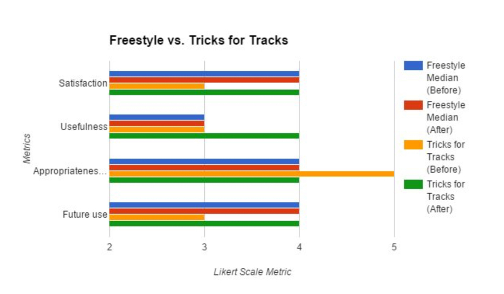
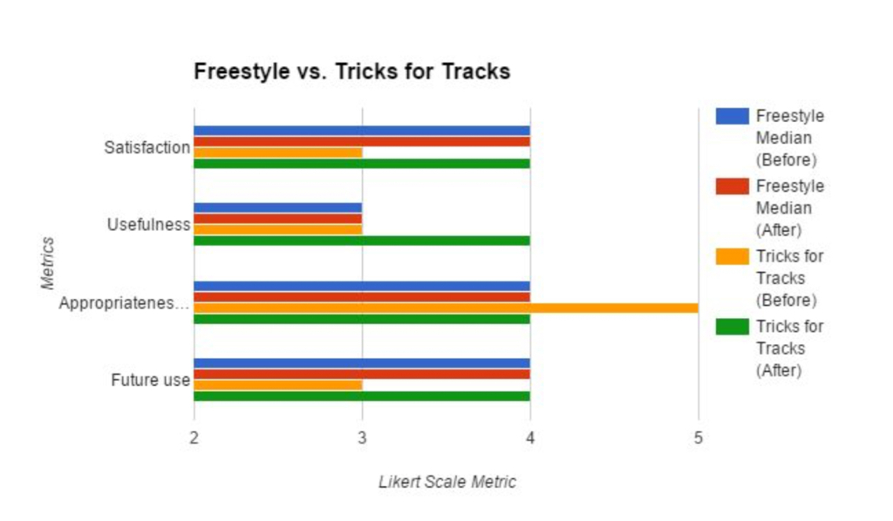

Musiskate: Enhancing the Skateboarding experience through music
The Crowd Sourcerers Team, Georgia Tech

Sarthak Ghosh
Ivy Chen
Lorina Navarro
Pratik Shah
The Crowd Sourcerers Team, Georgia Tech
Sarthak Ghosh
Ivy Chen
Lorina Navarro
Pratik Shah
In this project, we explore ways to encourage intermediate skaters to learn and improve their skills by enhancing the skateboarding experience through rich audio feedback. During our user research, we found that there are two aspects of learning that we uncovered that is relevant for skating:
“MusiSkate” is essentially a skateboard that provides real-time musical feedback to different skating movements. This solution has the advantage of enhancing the user experience of skating through rich audio feedback. This concept closely adheres to the two aspects of learning mentioned above, in addition to the desired simplicity and expressiveness of the skateboarding culture.
Learning to skateboard is highly a experiential process: it is primarily facilitated through trial-and-error, repetition, “feel” (e.g., experiencing the equipment) and watching others (e.g., via YouTube, in person). However this process can be extremely time taking for some and even discouraging. Hence it is useful to think of ways to augment the skateboarding experience that can both encourage users to keep at it!
Skateboarding is a unique sport such that it can defined as both a “social” and “loner” sport. It is social in the sense that groups of people can be seen to be skating together, and it is a loner sport because skaters dedicatedly practice tricks alone, and there are hardly ever any teams, coaches, officials or strict rules. Such a realization, added to our perceived “coolness” of the inherent showmanship of the activity directed us to look further into the highly physical culture of skateboarding.
Demographics
Intermediate Skaters with 1-5 years of experience

We visited prime skateboarder areas and observed the skaters in their natural environment to understand their process.We conducted semi-structured interviews in two well-known skateparks in and around Atlanta:


During the interviews I sometimes played the role of the interviewer and at times the note-taker. We prepared a discussion guide before interviewing users. We also used a pre-interview survey to get information about users’ demographic data, level of experience and contact details through which we could get back in touch with them. We also had most users sign a confidentiality agreement to ensure that we will only use users’ data for our project. Finally we provided a summary of our research to our users. This included description of the research, contact details of the researchers and information about the confidentiality.


Based on our categories found from the affinity diagramming, we conducted a quick needs analysis activity among the group members.


Augmented Reality Game for Skating
The system consists of a mobile phone app that allows skaters from around the city to compete with each other, look for friends or mentors and become masters of various skate spots.
Creating Music through Skate
Attaching motion sensors on the skateboards and then mapping the movements to aound-clips to enhance creativity and to encourage better performance

Arcade Simulations For Skating
An arcade game for teaching skateboarding to beginners, without having to feel embarrassed about repeated failed attempts while being in a safe physical environment practicing their technique.
Creating music through skate was well accepted as a novel idea. Lots of discussion arose around the possibilities of having collaborative jamming involving skateboarding.

We started our prototyping journey in a step-by-step, iterative manner by implementing two low fidelity mock-ups at first. We initially used commercially available audio software to create a Wizard of Oz prototype. Next we created a video prototype in order to show the intended interactions to the stakeholders. We figured out that the video was in fact a very good medium to get our ideas across effectively. Over the next few days, we implemented two physical prototypes of higher fidelity. One involved using an android phone to detect skateboard tricks. The other involved attaching an inertial measurement unit sensor and an arduino to a skateboard to understand its movements (developed by myself). The android app demonstrates the track unlocking functionality of the system based on successful trick completion (Tricks for Tracks). On the other hand, the IMU sensor based prototype demonstrates the real time audio feedback on freestyle skateboarding. We went in this direction of implementing two separate prototypes because:. There are two main aspects to our design idea: feedback on trick completion, and immediate audio feedback on movement. We decided to implement each of these functionalities in a parallel way so that the whole concept can be prototyped in a short period of time. Our immediate goal was to test our concept of interaction, so it didn't really matter if different aspects of the interaction are prototyped separately and are not packaged in the same prototype.
We conducted a heuristic evaluation session with another team from our class consisting of Meeshu Agnihotri, David Chiang and Kara Kenna. The purpose of this is to internally evaluate our system for major usability issues before presenting it to the user for testing. Details about the process and findings from the Heuristics evaluation are presented here and will be added to this webpage shortly.
We conducted an usability testing of our prototypes with three participants that we recruited. The purpose is to determine whether the prototype work with its intended users and to improve our design. This video demonstrates the testing process:
 Tricks for Tracks
Freestyle vs Tricks for Tracks

In general, the ratings for Freestyle remained constant for the pre-test and post-test questionnaires, implying that it met the users’ expectations of the system. One thing to note is it did not meet the threshold of 4 for usefulness, which shows that it was perceived to be more entertaining than useful.This can be due to the fact that the Freestyle interaction does not utilize a rewarding methodology but concentrates more on bringing out the creative side of the skater. This creative aspect will become more prominent when a larger number of tricks and movements can be mapped to widely varying sound-effects and also when the user gets the choice of choosing his/her own music track. For Tricks for Tracks, the usefulness and future use increased (median = 4) and decreased in appropriateness (median = 4), which can mean the users felt it exceeded their expectations but the music must be more customizable for their own purposes. Overall, the prototypes met our threshold of acceptance of 4-5 on the Likert Scale.
Tricks for Tracks
Freestyle vs Tricks for Tracks

In general, the ratings for Freestyle remained constant for the pre-test and post-test questionnaires, implying that it met the users’ expectations of the system. One thing to note is it did not meet the threshold of 4 for usefulness, which shows that it was perceived to be more entertaining than useful.This can be due to the fact that the Freestyle interaction does not utilize a rewarding methodology but concentrates more on bringing out the creative side of the skater. This creative aspect will become more prominent when a larger number of tricks and movements can be mapped to widely varying sound-effects and also when the user gets the choice of choosing his/her own music track. For Tricks for Tracks, the usefulness and future use increased (median = 4) and decreased in appropriateness (median = 4), which can mean the users felt it exceeded their expectations but the music must be more customizable for their own purposes. Overall, the prototypes met our threshold of acceptance of 4-5 on the Likert Scale.
Using the MusiSkate prototype we have demonstrated how audio feedback can play a part in enhancing the experience of skateboarding and potentially being useful in long-term learning of tricks. These findings suggest applications in other trick-based sports. Future iterations will include a combination the two prototypes, finer trick detection algorithms, increasing the complexity of the reward structure and customization of musical and skateboard preferences.